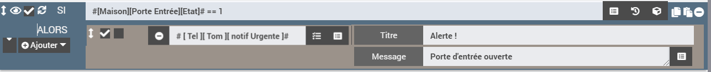
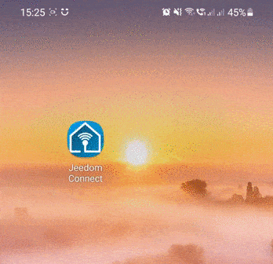

Notifications
Vous avez la possibilité de gérer différents types de notifications sur l'application Jeedom Connect. Ces notifications peuvent être utilisées comme vous le feriez déjà avec l'envoi par Jeedom d'un SMS, Telegram, et autres sortes de messagerie.
Vous pouvez donc vous envoyer des notifications (via des scénarios par exemple) : lorsque votre porte d'entrée s'ouvre alors que vous êtes absent, pour vous prévenir de sortir la poubelle, indiquer que le facteur est passé, ... vers votre application JeedomConnect.
Les Canaux
Dans le paramétrage des notifications, vous avez la possibilité de créer plusieurs canaux.
Ces canaux permettent de définir différentes façon de réagir qu'aura votre smartphone à la réception d'une notification JeedomConnect.
Par exemple depuis le plugin, vous pourriez créer un canal Défaut, un Silence et enfin un Urgent (propre à chaque équipement).
Ces canaux sont ensuite disponibles sur votre application mobile JeedomConnect. Faites un clic long sur l'icone JeedomConnect, puis 'informations', ensuite allez dans le menu 'notification' : vous devez alors voir les 3 canaux précédemment créés Défaut, Silence et Urgent.
Vous pouvez alors les personnaliser : (toujours en exemple)
- le canal
Silencerecevra toutes les notifications pour lesquels je ne souhaite pas être dérangé : donc je choisis de ne pas avoir de son - la canal
Urgentpar contre il faut absolument que je lise les notifications au plus vite, du coup je choisis une sonnerie bien particulière (je peux augmenter également le son), et je choisis l'option 'Ignorer ne pas déranger'
Les notifications
Il faut ensuite créer les commandes notifications qui auront un lien avec nos canaux.
Dans l'onglet notification, (toujours en partant de l'exemple donnée au dessus), je crée donc 3 notifications : notification (créé automatiquement) en lien avec le canal Défaut, notif silencieuse que je lie au canal Silence, et notif urgente que je rattache au canal Urgent.
Vous pouvez également :
- mettre à jour l'existante : si cochée, alors vous ne verrez qu'une seule notification du même type dans votre barre de notification sur votre smartphone. (si décochée, chaque notification sera affichée)
- couleur : définit la couleur du titre de la notification sur votre smarphone, ainsi que celle de la notification
- image : permet d'ajouter une image sur le coin en haut à droite de la notification
- actions : permet de réaliser commandes et/ou scénario à chaque fois qu'une notification est envoyée. (par exemple : si envoi d'une notification urgente, je veux avoir la possibilité d'exécuter le scénario qui permet de déclencher l'alarme de la maison)
Comment envoyer une notification ?
Une fois que vous avez paramétré vos différentes notifications, les commandes associées sont automatiquement créées sur votre équipement (après sauvegarde), dans l'onglet dédié comme sur tout équipement Jeedom :
vous pouvez donc vous en servir dans un scénario ou n'importe quel autre type (interraction, bloc code, ...) :
Voici par exemple la réception d'une notification : (avec les configurations présentées précédemment, ça reste donc toujours qu'un exemple possible ! )
C'est une notif Urgente qui a été envoyée, donc puisque la notification est paramétrée sur le canal Urgent, mon téléphone sonne donc avec un fort volume même si je suis en mode 'ne pas déranger'.
La notification est affichée en rouge dans la barre de notification Android, ainsi que lorsque je la visualise en entière dans l'application JeedomConnect, et on voit la présence d'un icône 'sirène rouge' dans le coin supérieur droit.
Et j'ai également la possibilité de cliquer sur le bouton Alarme maison pour exécuter le scénario que j'ai paramétré et qui déclenchera l'alarme de ma maison.
Comment envoyer une notification à tous les appareils ?
Par défaut le fait d'envoyer à "tous" les appareils JC n'existe pas.
En effet, il est possible de configurer plusieurs types de notifications par appareil, il nous est donc impossible de deviner lesquelles sont à utiliser.
Vous pouvez créer plusieurs notification de type Notifier tous, il faut :
- aller sur la page principale du plugin et sélectionner sur
Notification multiples - cliquer sur
ajouterpour créer un nouveau type de notification (on peut par exemple imaginer avoir unNotifier les parents,Notifier les enfants,Notifier toute la famille) - selectionner l'ensemble des notifications qui devront être utilisées lorsque l'action sera réalisée
- sauvegarder les modifications pour ne pas les perdre
- Lors de la sauvegarde, une nouvelle commande est automatiquement créée sur chaque équipement qui ont été coché
Quelles sont les options possibles dans les notifications ?
Vous avez la possibilité de passer quelques options dans les notifications sous la forme clé=valeur, chaque option doit être séparé par un | :
title: permet de donner un titre à la notification (c'est l'option qui est prise par défaut si jamais vous n'indiquez aucune option)gotoWidgetId: permet d'afficher un bouton sur la notification qui vous redirige directement sur un widgetgotoPageId: permet d'afficher un bouton sur la notification qui vous redirige directement sur une pagefiles: permet d'envoyer des images/fichiers (! il faut indiquer le chemin complet pour aller sur le fichier)
par exemple : title=y'a du courrier | gotoPageId=10 | files=/var/www/html/data/img/courrier.png
permettra d'avoir une notification ayant comme titre "Y'a du courrier", une image sera présente et un bouton permettra d'aller sur la page ayant l'id = 10 de votre application.
Utilisation avec Ask
Les notifications Jeedom Connect sont compatibles avec la fonction Ask de Jeedom. Vous pouvez indiquer autant de réponses souhaitées, ou bien attendre une réponse tapée en texte libre directement dans la notification. Il est également possible de définir un timeout au delà duquel il n'est plus possible de répondre.
Envoyer des images
Il est possible d'envoyer des images aux notifications (par exemple des shot de caméras). La première image sera visible dans la notification Android directement. Pour accéder aux autres il faut se rendre dans la page de notification de l'application.